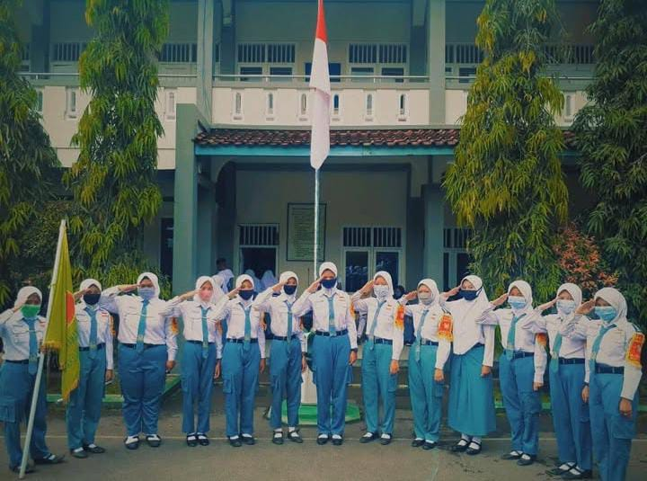
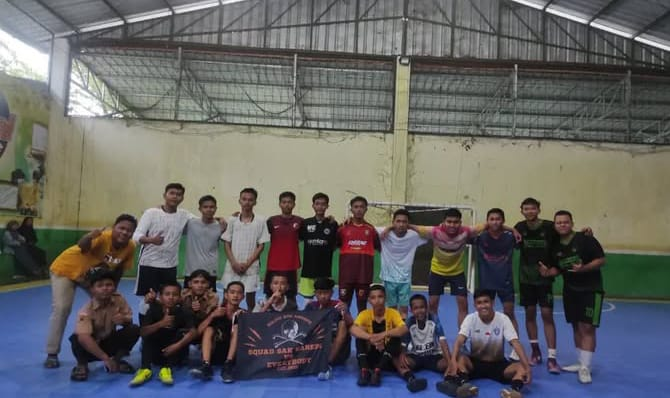
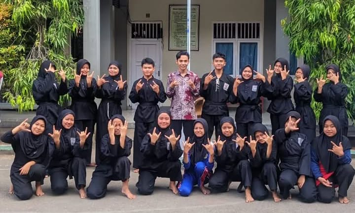
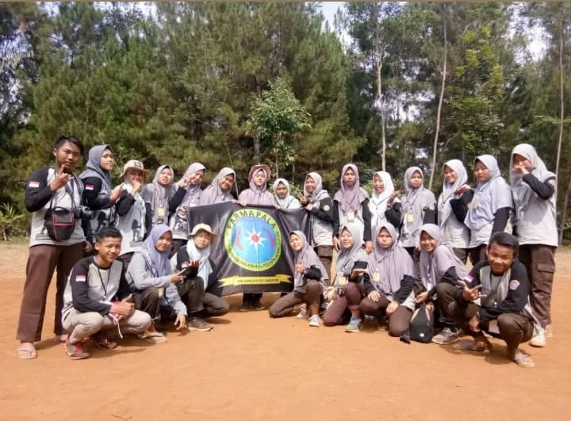

Ekstrakurikuler
OSIS
Organisasi Siswa Intra Sekolah yang membentuk karakter kepemimpinan, kreativitas, dan manajemen acara sekolah.
Lihat Selengkapnya

PKS
Pasukan Keamanan Sekolah berperan dalam ketertiban, baris-berbaris, dan kedisiplinan pelajar.
Lihat Selengkapnya

Futsal
Ekstrakurikuler olahraga yang berfokus pada permainan tim, teknik, dan sportivitas.
Lihat Selengkapnya

PSHT
Persaudaraan Setia Hati Terate mengajarkan bela diri dan nilai-nilai luhur persaudaraan.
Lihat Selengkapnya

Farmapala
Kelompok pecinta alam yang sering mengadakan pendakian, kamp lingkungan, dan aksi sosial.
Lihat SelengkapnyaPMR
Palang Merah Remaja melatih siswa dalam pertolongan pertama dan pelayanan sosial.
Lihat Selengkapnya